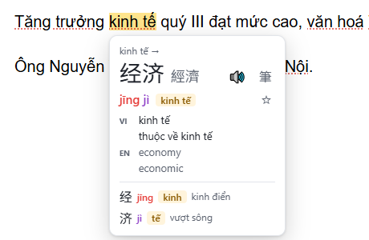
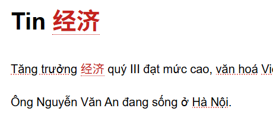
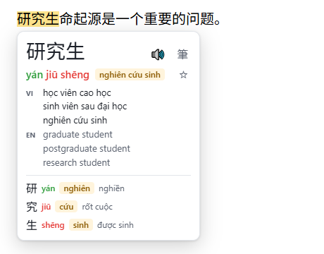
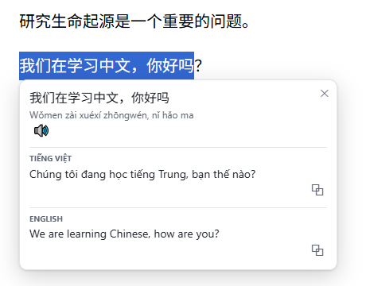
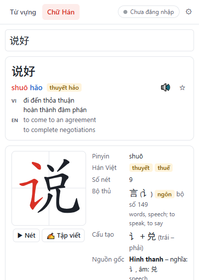
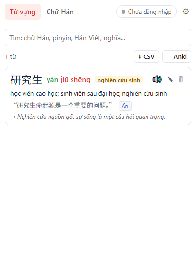

Chinese Learner
Học tiếng Trung ngay trên trang web bạn đang đọc. Extension cho Chrome và Microsoft Edge.
Tính năng
- ★ Hán Việt ngượcĐọc báo tiếng Việt cũng học được chữ Hán: từ Hán Việt (kinh tế, văn hoá, ngân hàng…) được gạch chân, rê chuột để xem 经济, 文化, 银行… Từ đã lưu có thể hiện bằng chữ Hán ngay trong bài.
- Rê chuột để tra từPinyin tô màu theo thanh điệu, nghĩa tiếng Việt và tiếng Anh, tự nhận diện từ dài nhất (研究生, 学习…).
- Âm Hán Việt đúng theo cách đọc好 hǎo → hảo, hào → hiếu; 行 háng → hàng, xíng → hành.
- Phát âmDùng giọng đọc tiếng Trung của máy, chỉnh được giọng và tốc độ.
- WordbookLưu từ kèm câu ví dụ, ghi chú, tag. Đăng nhập Google để đồng bộ giữa các máy qua Google Drive của bạn.
- Thứ tự nét và bộ thủAnimation nét, tập viết, bộ Khang Hy, số nét, cấu tạo và nguồn gốc chữ.
- Dịch câu nhanhBôi đen để dịch Trung ⇄ Việt/Anh kèm pinyin, hoặc gõ vào ô dịch trên thanh công cụ.
- Xuất sang AnkiFile CSV hoặc gửi thẳng qua AnkiConnect, bỏ qua từ đã có.
- Chạy offlineTừ điển 130.000+ mục nằm sẵn trong extension. Chỉ dịch câu và đồng bộ mới cần mạng.
Hình ảnh






Quyền riêng tư
Không có máy chủ, không thu thập dữ liệu. Nội dung trang web chỉ được tra trên máy bạn. Văn bản chỉ được gửi tới Google Translate khi bạn yêu cầu dịch. Wordbook đồng bộ vào thư mục ẩn trên Google Drive của chính bạn. Xem Chính sách quyền riêng tư.